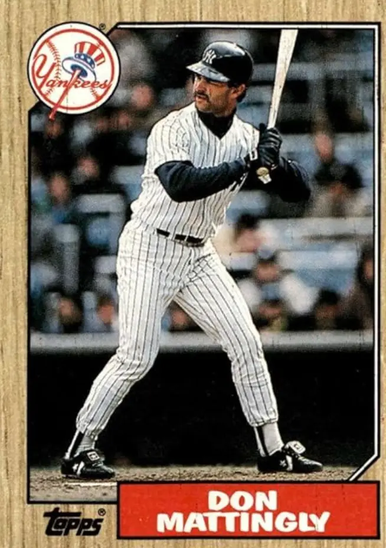

Don Mattingly "Donnie Baseball"
Career Highlights & Facts
(Facts are AI-generated and may require verification)
- Won 9 Gold Glove awards at first base.
- Set a major league record by hitting 6 grand slams in a single season.
- Played 1/3 of an inning at second base while throwing left-handed.
Would you like to find out more about Don Mattingly?
Player Biography
Don Mattingly January 4, 2012 / in BioProject - Person Batting Champions Most Valuable Player 1980s All-Stars 2026 Hall of Fame ballot Nuclear Powered Baseball / by admin This article was written by James Lincoln Ray Talk of Don Mattingly’s worthiness for enshrinement in the Hall of Fame most often focuses on his offensive statistics. Perhaps not enough is said about his defense. Mattingly has one of the best career fielding percentages of any player – ever – at any position. His .9959 percentage means that every 1,000 times the ball came his way, he made only four errors. He won nine Gold Glove awards, the second most among first basemen. Not that his offense was to be sneered at: a .307 lifetime batting average, 222 home runs, and three straight seasons of more than 200 hits. Still, in Mattingly’s 15 years on the baseball writers’ ballot, he was never favored by more than 28.2 percent of the voters; his percentage on the ballots for the 2014 and 2015 inductions was in the single digits, and he was removed from the baseball writers’ ballot. His hopes for election were entrusted to the Hall of Fame’s Contemporary Era Committee. The debate over Mattingly’s merits will continue. The subject of the debate, Donald Arthur Mattingly, was born on April 20, 1961, in Evansville, Indiana, the youngest of five children of Bill and Mary Mattingly. Bill was a mailman, with a work ethic that would one day rub off on his youngest son. Mary raised the five children: Jerry, the oldest son, who died in a construction accident at 23 years old; Randy, Michael, Judy, and Donnie. Because he was the youngest in the family, his brothers let him tag along to their neighborhood games. Randy Mattingly recalled that even though Don was three or four years younger than most of the guys in the games, he could hold his own in any game with a ball because he was a fierce competitor who was always trying to get better. Mattingly’s introduction to baseball included backyard Wiffle ball. Years later, he recalled those games, saying, “I can’t imagine what my parents must have been thinking, with that Wiffle ball banging against the metal door every two minutes.” 1 Wiffle ball helped Don developed his ability to drive the ball the other way. On the backyard field a thickly-leaved tree hung over the field on the first-base side. If you hit the tree, you were out. In left field, however, Mattingly recalled, there was the family garage. A fly ball onto the garage was counted as a home run. Mattingly learned pretty quickly to hit the ball the other way. It was a skill that served him well for many years to come. Of his childhood, Mattingly described a supportive family that instructed and encouraged their children to work hard and succeed. “I grew up in a family that didn’t criticize a lot,” he said. “We were told when we did something wrong, but we got a lot of praise. I remember once at a wedding reception, when I was 8 years old, and my father told me he was proud of the way I handled myself. I wasn’t sure what I did, but I tried to do it again because of what he said.” 2 At Reitz Memorial High School, Don stood out in three sports. He was the football team’s starting quarterback and the basketball squad’s star point guard. But it was one American Legion baseball game that convinced Don that he was a baseball player. In a 1976 game against the neighboring town of Owensboro, Kentucky, he faced a pitcher who was the Cincinnati Reds’ top draft pick that year. Don, a freshman, hit two doubles off the star. He soon had developed a name for himself. Scouts were occasionally seen at his games, and he began receiving letters offering college scholarships to play baseball. At one point Mattingly helped Reitz Memorial to a 59-game winning streak, with one of those wins coming in the Indiana state championship game in his junior season. Along with his father, Mattingly said that his biggest influence with respect to his work ethic was his high-school baseball coach, Quentin Merkel, who was always pushing Mattingly to get better. “Coach would say to me, if you are the best player in the region, you should try to become the best in the state,” Mattingly said. “If you are best in the state, then you start thinking about being the best in the country. That ethic, to always get better, helped me in the minor leagues when I was fighting for jobs.” 3 By 1979 Mattingly had become a hot prospect, even earning a brief write-up in Sports Illustrated for his exploits. Most teams avoided drafting the high-school star, however, because many expected that he would attend college. Taking a chance, the New York Yankees selected him in the 19th round of the 1979 amateur draft and subsequently signed him to a minor-league deal. Mattingly enjoyed almost instant success in the minor leagues, hitting .349 with the Oneonta Yankees of the Class-A (short season) New York-Penn League in 53 games in 1979. The next year, he moved up to Greensboro (North Carolina) of the Class-A South Atlantic League, where he led the league with a .358 batting average. After a strong year for Double-A Nashville (Southern League) in 1981 (.315, 98 RBIs), Mattingly was promoted to Triple-A Columbus for 1982. He had another fine season, hitting .315 with 10 home runs and 75 RBIs, and winning accolades for his defensive play. When major-league clubs expanded their rosters to 40 players in September, the Yankees called up Mattingly Years later, he fondly recalled his first trip to the House That Ruth Built. “I think the time that I really think about the most is just being called up and walking into Yankee Stadium for the first time, walking into the dugout and just seeing the left-field corner and the stands in that corner like the horseshoe there,” he said. “And at that point, just realizing the dream to get to the big leagues. So that is a moment that is always one of the freshest and just a great memory for me.” 4 Mattingly made his major-league debut on September 8, 1982, against the Baltimore Orioles in Yankee Stadium, as a ninth-inning defensive replacement for Dave Winfield in left field. Three days later Mattingly had his first major-league at-bat, against reliever Jim Slaton of the Milwaukee Brewers, and popped out to third base on the first pitch. It wasn’t until almost three weeks later that he managed his first major-league hit, an 11th-inning single off Boston’s Steve Crawford on October 1 in Yankee Stadium. In 12 major-league at-bats in 1982, he had two singles and one RBI. Mattingly won a roster spot during spring training in 1983, but when the season began, he was used sparingly. Almost two weeks into the season, he had just seven at-bats and two hits, and on April 14, he was sent back down to Columbus. It was his last trip to the minor leagues. In 43 games with Columbus, Mattingly hit better than .340 with 8 home runs and 37 RBIs. And when the Yankees’ Bobby Murcer announced his retirement on June 12, a roster spot and a reserve outfield position opened up in the Bronx, and Mattingly was called up to fill it. He spent the balance of the season as a spot starter, pinch-hitter, and defensive replacement in right field, left field, and first base. Mattingly also helped make some baseball history on August 18, 1983, when he played second base (as a left-handed thrower) in the finish of the George Brett “Pine Tar Game,” a contest that had begun almost a month earlier. On July 24, 1983, the day the game began, Brett hit what seemed to be a two-out, two-run home run in the top of the ninth inning off Rich Gossage , putting Kansas City ahead by a run. New York manager Billy Martin protested the home run, claiming that Brett’s bat had more than 18 inches of pine tar running up its handle. Home-plate umpire Tim McClelland agreed, called Brett out, and signaled the game over. But American League President Lee MacPhail later reversed the ruling, and Brett was given credit for the home run. When the game was resumed almost a month later, Martin put left-hander Mattingly at second base. He played only one-third of an inning. For the 1983 season, the 22-year-old Mattingly showed that he was a capable major-league hitter and a very skilled defender, batting .283 with 4 home runs and 32 RBIs in 279 at-bats. As spring training opened in 1984, new manager Yogi Berra announced that although the team planned to keep Mattingly with the Yankees all season, he would not begin the season as a starter. With Dave Winfield in right field, Steve Kemp in left, and Roy Smalley being groomed for the full-time first-base job, Berra said, Mattingly would best be used as a reserve player and a pinch-hitter because “he has the kind of stroke that enables him to sit for three weeks and still hit.” 5 Mattingly was relieved to have his role defined so early. He was grateful, he said, that “this time, there’s no worry about not making the team. Last year, I didn’t know and I didn’t think I had much chance. I didn’t know until the last day of camp, and when I made the team I didn’t know how long I’d stay.” 6 But he was less thrilled about being given a reserve role so early in camp, especially since he was batting .474 at the time. “This is kind of hard to swallow without getting any kind of chance at all,” Mattingly told the New York Times in mid-March, “and there’s no way I can accept that. There’s no way I can say, OK, sit back, relax and do that. I feel I can change their mind or at least make it a very tough decision to sit me down.” 7 It took only a few weeks of spring training to change Berra’s mind. After a March in which Mattingly hit well and continued to show off his slick glove at first base, Berra announced that Mattingly would start the season as the regular first baseman. Mattingly got off to a hot start in ’84, a fact he attributed to having played winter ball in Puerto Rico. By midseason, he was hitting so well that some were beginning to compare him to the other young hitting star in New York City at the time, the Mets’ Darryl Strawberry . Among Mattingly’s biggest early supporters was Yankees owner George Steinbrenner , who told reporters as early as June 1984 that “Mattingly is the best young talent in baseball. You can talk all you want about Strawberry. I’ll take Mattingly.” 8 Steinbrenner had plenty of evidence to support his argument; at the time, Mattingly was outhitting Strawberry in every major offensive category. The biggest surprise in Mattingly’s 1984 offensive game was his newly found power stroke. Although he had never hit more than 10 home runs in a season in the minor leagues, he had already hit 12 before the end of June that year. Lou Piniella , then the Yankees’ hitting coach, described that summer how he’d worked with Mattingly on his swing all year, urging the young hitter to keep his weight back and hold his body in balance throughout the entire swing. The slight shift in body weight that Piniella recommended led to more power. In July Mattingly was named to his first All-Star Game, picked as a reserve by American League manager Joe Altobelli , who couldn’t ignore the Yankees first baseman’s .339 average and impressive power numbers. Mattingly got into the game with one out in the ninth inning as a pinch-hitter with the American League trailing 3-1. Batting against his former teammate, San Diego Padres closer Rich “Goose” Gossage, Mattingly flied out to left field. As the second half of the 1984 season rolled on, teammates Mattingly and Winfield got into a heated race for the American League batting crown. Winfield hit like a demon during the first half of the season, and his average climbed to .377 in early July. In August, however, Winfield slipped a little, and Mattingly caught up to him. By the first of September, he was batting .352 to Winfield’s .351. As the month wore on and the Yankees fell out of the divisional race, the competition for the batting title became the best running baseball story in New York City. The back pages of the city’s two tabloids, the Daily News and the Post, wrote about the race or ran full-page pictures of the contestants, almost every day. In a town that was always hungry for baseball success, the batting race took on the role of a surrogate pennant race for Yankees fans. The team’s owners loved the competition, because it kept fans coming to Yankee Stadium in droves, despite the fact that the Yankees were 15 games behind the Detroit Tigers. During the last two weeks of the season, the stadium scoreboard constantly displayed each player’s batting average, to the ninth digit, right up to the last at-bat. The excitement was justified; after all, no Yankee had won a batting crown since Mickey Mantle in 1956. And no two Yankees had ever finished 1-2 in hitting. Going into the season’s final weekend, Mattingly led Winfield .342 to .341. When asked who he thought would prevail, Piniella predicted that Mattingly would win, but gave him the advantage only because the team was facing three right-handers in a row to close out the season, which favored the left-handed hitter. But Mattingly went just 1-for-7 on Friday and Saturday, and entered the last day of the season trailing Winfield .339 to .342. In the last game of the year, however, he managed four hits in five at-bats, while Winfield was just 1-for-4. After Mattingly got his last hit, Winfield hit a sharp grounder to the shortstop, who forced a sliding Mattingly out at second base. As the new batting champ walked toward the dugout, the fans roared in salute, and after a few moments in the dugout, he re-emerged and walked to first base. Mattingly and Winfield shook hands, and walked off the field together as the crowd cheered. Mattingly had won the race, .343 to .340. “It was good that we could come off together,” Mattingly said. “Dave has been a great person through this whole thing. He handled himself like a gentleman. I have great respect for him. It’s good that we’re going to be teammates the next few years, at least.” 9 To go along with his batting title, Mattingly topped the American League in hits, with 207, and doubles, with 44. He also finished in the top five in RBIs, total bases, slugging percentage, and extra-base hits, and in November, he finished fifth in voting for the American League Most Valuable Player award. Despite Mattingly’s great season, the Yankees finished in third place in the AL East, 17 games behind the eventual World Series champions, the Detroit Tigers. In the offseason, George Steinbrenner acquired Rickey Henderson from the Oakland A’s in exchange for five players and cash. Henderson brought to the Yankees an entirely new level of speed and ability to reach base. He’d stolen at least 100 bases in three of the prior five seasons, and his career on-base percentage was well over .400 at the time. On the Yankees, he’d be a run waiting to score, and one of the top beneficiaries of Henderson’s addition would be Don Mattingly. Willie Randolph had been solid as a leadoff hitter in 1984, but his talents were much better suited to the second spot in the order. Randolph was a good contact hitter who walked a lot and rarely struck out, a guy who knew how to lay down a bunt. Those talents made him a solid bridge between Henderson, the table-setter, and Mattingly, who was about to become the game’s best RBI machine. The Mattingly-Henderson combination worked just as Steinbrenner had hoped. By the All-Star break, Henderson was batting a league-leading .357, and his on-base percentage stood at .441. He’d stolen 41 bases, which meant that he was on base almost half the time, and when he was on, he usually managed to place himself in scoring position. All told, in 1985 Henderson scored 146 runs, leading the American League by 30 over Cal Ripken’s 116. Mattingly took advantage of Henderson’s table-setting skills, picking up a major-league-leading 69 RBIs in his first 83 games. After the break, he was even better, batting .340 with 26 home runs and 76 RBIs in his final 76 games. He finished the season batting .324, third best in the American League, hit 35 home runs, and knocked in 145 runs, the most by a left-handed hitter since Ted Williams drove in 159 in 1949. Mattingly led the major leagues in doubles with 48. He won his first Gold Glove award and in November he easily won the American League MVP award with 23 of 28 first-place votes. The team, however, had a very disappointing finish to what was an otherwise promising season. The Yankees entered the final weekend of the year three games behind the Toronto Blue Jays, who were heading into Exhibition Stadium for a season-ending three-game series needing a sweep. And then they’d have to beat Toronto in a Monday afternoon playoff game if they expected to go any further. They won the Friday night game, 4-3 and closed the gap to two games with two to play. But on Saturday afternoon, the Blue Jays finished the Yankees off with a 5-1 win behind a complete-game gem from Doyle Alexander . It was a tough pill to swallow. At one point during the season, the Yankees won 30 out of 36 games, and seemed ready to overtake Toronto, but every time they climbed to within two or three games, they’d fall back again, until the final lost weekend of the season. They finished with 97 wins, two fewer than Toronto. Despite the fate of the Yankees that season, Mattingly began to draw rave reviews from players, coaches and baseball writers. Lou Piniella called him the perfect blend of Wade Boggs and George Brett. Hall of Famer Stan Musial said, “He reminds me of myself.” 10 Musial wasn’t the only one to draw the comparison at the time, though he was surely the most credible. In some respects, Mattingly’s 1986 season was even more dominant than his MVP campaign the year before. He hit .352, with 238 hits, 53 doubles, 31 home runs, and 113 RBIs. He finished second to Roger Clemens that year in MVP voting. But once again, the Yankees stumbled. On August 15 they were within three games of the first-place Red Sox, and the Bronx seemed poised for an old-style Yankees-Red Sox pennant race. But the Yankees dropped 13 of their next 20 games, fell behind by 10 games and never made another serious run for the division crown. They did win a respectable 90 games, but when the playoffs began, the Yankees were once again on the outside looking in. A conspicuous side note from the 1986 season was the Yankees’ trip to Seattle in August of that year. Third baseman Mike Pagliarulo was injured before the first game of a doubleheader on August 30, and the Yankees needed an emergency fill-in. Mattingly volunteered, and manager Lou Piniella gave him the go-ahead, making him the first left-handed-throwing third baseman to play in the majors since Wee Willie Keeler in the early 1900s. In the bottom of the first inning, leadoff batter John Moses hit a grounder to third base, which Mattingly fielded cleanly before making a wide throw to first base that allowed Moses to reach on an error. But he quickly redeemed himself on the next play when he stabbed a sharp grounder from Mickey Brantley and started a 5-4-3 double play. In all, Mattingly played three games at third base, had one putout, 11 assists, one error, and was involved in two double plays. Mattingly began the 1987 season in a slump. While he had a tendency to start slow, this was worse than usual. After the first 33 games, he was hitting .240 with just three home runs. Then he hit his groove. Between May 14 and June 4, he raised his batting average to .311, and during that 20-game stretch knocked in 15 runs. Just as he was returning to form, however, Mattingly injured his lower back on June 4. The cause of the injury was disputed at the time, with some newspapers saying that it happened while Mattingly and pitcher Bob Shirley were playfully wrestling around in the clubhouse. Mattingly denied the horseplay story and said that it happened while he was fielding groundballs before the game that day. Although the injury was not devastating, it did require Mattingly to spend five days in traction at NYU hospital. Doctors at the time described the injury as two protruding disks that wouldn’t require surgery, but would need a few weeks of rest. While Mattingly was on the shelf, he was replaced by a young up-and-coming left-handed slugger named Dan Pasqua . But Mattingly wouldn’t play the role of Wally Pipp to Pasqua’s Lou Gehrig , because when he returned three weeks later, he caught fire. In his first 13 games back, Mattingly hit .370 (20-for-54) and knocked home 12 runs. It was a nice prelude for what was to follow. The streak began on July 8, 1987, in the bottom of the first inning at Yankee Stadium versus the Minnesota Twins, when Mattingly drove a Mike Smithson fastball over the right-field wall for a three-run homer. It continued the next night in a loss to the White Sox that was highlighted only by Mattingly’s homer in the sixth inning. The next night Mattingly hit a grand slam in the bottom of the Yankees’ seven-run second inning. It was his third bases-loaded round tripper of the season, a notable achievement considering that before 1987 he hadn’t hit a single slam in his career. Mattingly hit solo homers in the next two games against the White Sox, extending his streak to five straight games with home runs, one short of the American League record. Mattingly didn’t shrink from the spotlight. At Texas, in the top of the second inning, he cracked his fourth grand slam of the season off knuckleballer Charlie Hough . The streak was now at six games. Mattingly was tied for the American League record held by six players and just two games from the major-league record of eight, set by Dale Long of the Pittsburgh Pirates in 1956. Between the sixth and seventh games, Mattingly told reporters that he wasn’t trying to hit home runs. Rather, he was just trying to hit line drives, and pick up every potential RBI that was out on the bases. “After sitting out three weeks and missing chances to drive in runs,” he said, “I told myself I’m not going to leave anybody on base out there. When we reached the 81-game mark, I told myself I’d like to drive in a run every day for the rest of the year. I don’t think that’s impossible. I can do it. If someone’s on, drive in a run. Or hit a home run. I said that before I got in this streak. I don’t know what happened with the home runs. I just got in a groove – bing, bing, bing.” 11 The next night, Mattingly set out to break the American League mark in a swirling Arlington Stadium wind that was keeping the ball from carrying. In the first inning, he hit a bullet to center field that appeared to be headed out, but the wind slowed it up, and the ball slammed against the top of the fence for a double. In the sixth inning, though, he hit one on the screws against lefty reliever Paul Kilgus . The ball ended up in the right-field seats; Mattingly had broken the American League record. Talking to reporters, Mattingly said “it would be selfish” to try for the major-league record at the expense of the Yankees’ ambition to finish in first place. His explanation of his sudden power: “I’ve found a swing that gets the ball in the air. All of a sudden, without even trying, something has clicked.” 12 The next night against Texas, Mattingly hit a Jose Guzman sinker in the fourth inning that cleared the 11-foot-high fence in left-center field. The ball traveled just beyond the leap of Pete Incaviglia , the left fielder, to tie the major-league mark. “I didn’t think it was going to carry out,” Mattingly said after the game, “but the ball carried well to left here. I didn’t see the ball go out. I thought he caught it.” 13 The capacity crowd of 41,871 at Arlington Stadium, which filled the normally vacant center-field bleachers moments before Mattingly’s historic at-bat, stood and cheered until Mattingly reluctantly climbed to the top step of the dugout – after being coaxed by Dave Winfield – and lifted his batting helmet. “I know I talk about not caring about it,” Mattingly said, “but it does feel better after I hit one. I guess it goes on. It’s not like I’m worrying about it one way or the other, or I’m going to be disappointed if I don’t hit one, or anything like that. It just keeps going on. It’s surprising to me.” 14 But it didn’t keep going. The next evening he went 2-for-4, with a double and a run scored, but no home runs. The remarkable streak had ended at eight. Mattingly’s offensive statistics during the streak were astounding. In eight games, he hit 10 home runs, two of which were grand slams. He drove in 21 runs and picked up 17 hits in 37 at-bats for a .459 average. He had two doubles and scored 11 runs. He struck out just twice. With 49 total bases in his 37 times at bat, he had a 1.324 slugging average. Before the 1987 season ended, Mattingly would set another record. On September 29, against Red Sox starter Bruce Hurst , he ripped a grand slam into the right-field upper deck. It was his sixth of the season, surpassing the previous high of five held by Jim Gentile and Ernie Banks . Mattingly’s final numbers for the year were impressive, especially considering that he missed 21 games because of the back injury: a .327 batting average, 30 home runs, 115 RBIs, and a .559 slugging percentage. He finished seventh in MVP voting, but the Yankees dropped to 89-73 and finished fourth in the division. Mattingly was now five full seasons into a splendid Yankees career, but he still hadn’t tasted postseason play. Mattingly continued his All-Star-level play over the next two years. Even though he drove home only 88 runs in 1988, his two-year average for 1988-89 was a .307 average, 21 home runs, and 101 RBIs. Although Mattingly may have slowed down slightly since the mid-’80s, had he been able to maintain even this more modest pace, he looked like a future Hall of Famer. At least that is what a lot of knowledgeable baseball men said about Mattingly during the end of the 1980s. Sparky Anderson , the first man to manage a World Series champion from each league, said of Mattingly in 1988, “I think he’s the greatest single player in our game.” George Brett, the Kansas City star and future Hall of Famer who hit .390 in 1980, remarked of Mattingly in the same year, “If he isn’t the best, I’d like to know who is.” 15 Fireballer Dwight Gooden of the Mets said: “I’m glad I don’t have to face that guy every day. Mattingly has that look that few hitters have. I don’t know if it’s his stance, his eyes or what, but you can tell he means business.” 16 But it wasn’t just managers and players who foresaw a plaque in Cooperstown for Mattingly. It was the very writers who held the keys to the Hall that were preparing his table as early as 1989. In a piece headlined “Every Pitcher’s Nightmare,” New York Times writer Murray Chass compared Mattingly favorably to some of the all-time greats after their first five or six seasons. Chass interviewed Piniella for analysis on the first baseman’s mechanics: ” ‘Mattingly’s swing is mechanically unique,’ Lou Piniella explains, because of what he calls ‘a small take-away.’ Every hitter gathers momentum for his swing with an instinctive backward movement of the bat before he brings it forward. Mattingly’s backward motion is minuscule. ‘We’re talking three, four, five inches,’ Piniella says. ‘When you have a small take-away and when you’re as quick as he is, you can look away and handle the ball in. He can still stand on top of the plate and pull.’ “ 17 Pitchers at the time felt that the only way to approach Mattingly was with a variety of pitches. “I usually throw my whole repertoire at him,” 18 said Frank Viola , the Minnesota Twins’ left-hander, who was the Most Valuable Player in the World Series the previous year. Viola had good success against Mattingly, holding him to nine hits in 50 at-bats over the course of their careers. “You’ve got to mix it up and hope he’s not looking for that certain pitch.” 19 Pitchers especially knew that they couldn’t count on striking out Mattingly. Jack Morris , the Detroit Tigers pitcher who won more games than any other pitcher in the 1980s, said that during the course of an at-bat, “if you fool him one time, you’re doing a good job. Three times? Forget it.” 20 In the face of all this praise, Mattingly was humble, always preaching the workaday ethic. He described his approach to hitting as more of a mental struggle than a physical feat. “Each time I go up, I want to get a good pitch to hit and hit it hard,” he said. “A lot of guys give away at-bats. They make a mental mistake here, a mental mistake there.” 21 Mattingly felt that lapses in concentration could cost a player a significant number of his 650 or so at-bats per season. He reasoned that if a player could cut down on the number of times he defeated himself by maintaining a high level of concentration, “take 100 of those away, or 50, where you swing at a bad pitch, you’d be so much better off,” he said. “It’s a challenge, over the course of a season, to stay tuned in. There are times that you’re not; it’s impossible to be tuned in for 162 games, but you really have to be ready.” 22 During his first six full seasons, Mattingly’s career batting average stood at .327, and he averaged 203 hits, 43 doubles, 27 home runs, 114 RBIs, and 97 runs scored. He also won five straight Gold Gloves and made six consecutive All-Star teams. Mattingly made it known that he wanted a new contract, or an extension of his existing deal that concluded at the end of the 1990 season. The Yankees responded by making him the highest-paid player in baseball history at the time. On April 10, 1990, the first baseman signed a five-year contract that would pay him a total of $19.3 million, an average of $3.86 million per season. The deal was the largest in terms of average dollars, beating out the $3.75 million per year contract signed by Will Clark earlier that year, and well outstripping the $16 million, five-year contract that Mark Langston already had in place. Yankees owner George Steinbrenner defended the deal by saying: “A superstar is a superstar, so I can justify that salary. A Don Mattingly will attract people to see my club play.” 23 “Don Mattingly is now the best-paid player in baseball,” Steinbrenner said. “He will be with the Yankees for five years after this year and hopefully will complete his career here.” 24 Mattingly discussed the deal in his usual understated style. “I’m not going to look at the papers for a few days,” he said, “because I don’t want to read about it. I’d rather let my playing do all the talking.” 25 The thought of openly discussing his contract was not appealing to Mattingly. He conceded that as a child he had never dreamed about such riches. “It’s pretty hard to dream about something you never imagined,” he said. “I dreamed about playing baseball more than anything.” 26 But Mattingly’s bat didn’t do the talking, at least not during the first few months of the 1990 season. Although he typically started the season slowly, it soon became clear that Mattingly’s troubles at the plate were not merely the usual April ramp-up to midseason success. By June 1 he was hitting a respectable .278, but his power was simply nonexistent. He had just five homers and 24 RBIs in 45 games. Then things got worse. In 28 games and 116 at-bats in June, Mattingly hit just .216 without a home run. By the middle of July, his average had dropped to .248, and his homerless streak extended beyond 200 at-bats. Something was wrong. It turned out to be his old nemesis, those two bum disks in his back. On July 2 he told manager Stump Merrill that he’d been suffering from back stiffness and spasms for at least a week, and asked to be taken out of the lineup after making 231 consecutive starts. At the time, a somber Mattingly told reporters that he hoped he would miss only one game. It went on much longer than that. Although he came back for a pain-filled 10-day stint from July 14 through July 24, the Yankees put Mattingly on the disabled list on July 26. Merrill said the first baseman could be out for the remainder of the season. Although the Yankees reinstated Mattingly from the DL on September 12, it was clear that the chronic back injury, which doctors had described as a congenital disk deformity, severely limited and altered his swing. In the waning days of the 1990 season, Mattingly played sparingly and finished the year with the worst statistics of his career: a .256 average, 5 home runs, and 42 RBIs in almost 400 at-bats. During the offseason, Mattingly underwent a rigorous physical therapy regimen on his back. He rose at 6:00 A.M. four days a week at his home in Evansville to perform stretches and lifts that he’d learned the summer before while he was on the disabled list. By the time spring training rolled around, the first baseman sounded optimistic that he could regain his old form. “I have to prove I can stay healthy,” Mattingly said. “From there, we’ll see what I can do. In the spring, I did the things I wanted to do. Now, I want to get used to doing less hitting and all the extra stuff I did in the past. I wanted to feel comfortable at the plate, and I did.” 27 On March 1, 1991, Mattingly was given even more motivation to get back on top, when he was named the captain of the Yankees. “Once it had a chance to sink in,” he said, “it’s one of the biggest thrills and biggest honors for me in baseball. I take it seriously.” 28 His teammates were very supportive of the measure. Outfielder Jesse Barfield said, “It’s a good move. The guys respect him and the organization respects him.” Infielder Randy Velarde put it a little more directly: “Who else could you name captain? When you think of the Yankees, who do you think of? Don Mattingly. It’s ideal that Stump did it.” 29 Mattingly said he intended to lead by example, to let his play on the field do the talking. But when the season began, it was clear that he was doing more than just that. During the first few months of the season, he set upon his professional goals with a new fury, writing pep slogans on clubhouse blackboards, setting won-lost quotas for the team on television and, at times, declaring to reporters that an administrative shakeup might be just the ticket. While he adjusted to the role of captain, Mattingly still struggled at the plate. By midseason he was batting .303, but his power numbers were way down. He managed just 6 home runs, 13 doubles, and 34 RBIs through the team’s first 81 games. As Mattingly tried to rediscover his power through the pain, he experimented with different batting stances, grips, and swings. Later in his career, he admitted that this constant jostling of his plate approach may have held him back that year. He was also growing frustrated with ownership and the direction in which they were guiding the Yankees. The team was 41-40, tied for third place and 8½ games behind the division-leading Toronto Blue Jays. By mid-August, the Yankees had dropped 11 games below .500 and were a dozen games out of first place. Tension in the clubhouse was palpable, and perhaps for the first time in his career, Mattingly became the target of New York tabloid controversy. No biography about a New York Yankee who played during the Steinbrenner years would be complete without at least one story of a head-to-head faceoff between the player and the Boss. Mattingly had a number of head-butting sessions with Yankees management over the years, and at times he exchanged barbs with Steinbrenner in the New York tabloids. But the most memorable feud began early in the summer of 1991. Frustrated with the team’s direction, Mattingly asked to be traded. The Yankees said no, so the slugger kept his mouth shut, and continued struggling to find his perfect swing. Then, on August 15, general manager Gene Michael told the first baseman that he needed to get a haircut. Yes, a haircut. And although Michael and manager Stump Merrill delivered the news, everyone knew whom the request had originated from. George Steinbrenner, who at the time was serving what would turn out to be a three-year suspension for consorting with a gambler, Howie Spira, was watching everything from behind the scenes. Mattingly refused, even though he knew that he had agreed to the team’s well-known “haircut rule” as part of his contract, which required short, trimmed, nicely groomed hair. At the time, Mattingly was in clear violation of the rule, as his hair hung below his shirt collar, his mustache had grown out and, for a short time, and he looked like a member of the “mustache gang” of the early 1970s Oakland A’s. Although he wasn’t drawn and quartered for his refusal to submit to the barber’s shears, Mattingly was benched for a game. Nobody was happy. Merrill saw matters in black and white: “If someone from management tells you need a haircut, you get a haircut.” 30 But Mattingly had a different take, seeing the events as proof that he had become expendable and perhaps needed a new place to work. “Maybe I don’t belong in the organization anymore,” he said. “I talked to Gene Michael about moving me earlier in the year. He said we’ll talk at the end of the year. Maybe this is their way of saying, ‘We don’t need you anymore.” 31 The haircut brouhaha eventually died down; Mattingly succumbed to the barber two days later. But the trouble over his disclosure that he was thinking about leaving the Yankees did not subside. As the season drew to a close, things got worse. The Yankees sputtered to a 25-41 record over the last 2½ months of the season and finished in fifth place with a 71-91 record. The team that looked so promising just a few years earlier had dropped to the bottom of the division. Their owner was serving a suspension that was still open-ended. They had gone through four managers in three seasons, and looked poised to hire a fifth for the 1992 season. Their captain, who had been the game’s best player just two years earlier, finished what could only be described as a disappointing season, batting a respectable .288 but hitting just nine home runs and collecting only 68 RBIs. Things were looking pretty dire in Yankeeland. Despite the public-relations problems he’d been forced to endure, and the chronic pain in his back limiting his game on the field, Mattingly entered the 1992 season with a refreshed attitude. His power at the plate might have diminished, but his influence on the players around him only increased. He could no longer spend three hours a day in the batting cage, as he had sometimes done in the ’80s, and this gave him more time to talk to younger teammates about handling life on and off the field. Many credit Mattingly with making the adjustment to major-league life a little bit easier. One story has it that when Bernie Williams first came to the Yankees in 1991, teammate Mel Hall called him “Bambi” because, he said, Bernie’s big round eyeglasses made him look like a deer caught in the headlights. What started as fine, good-natured rookie ribbing soon went over the line, with Hall taking advantage of his veteran status to haze Williams mercilessly. For some reason, it was personal for Hall, who may have seen the talented young outfielder as a threat to his own job, and as young and vulnerable as Williams was at the time, it really got to him. Until Mattingly intervened. He was friendly with Hall and told him to cool it. Then he took Williams under his wing for a while. “He was real quiet and shy,” Mattingly recalled. “I thought he lacked a little confidence. You could see he had the talent, but you could see the insecurities, too. I think confidence was the big key for Bernie. You have to believe you can play here. You can’t keep hearing about potential. I think Bernie had to prove that to himself. Once you get that, you can do some things.” 32 Williams developed into a five-time All-Star and a four-time World Series champion. After two years in complete disarray, the Yankees seemed to bond as a team during the 1992 season. They won 76 games, a slight improvement over the prior year, and Mattingly had a resurgence of sorts. He finished with the same .288 batting average he had in ’91, but his power came back – not fully, but enough to make a difference. After averaging just 7 homers, 25 doubles, and 55 RBIs during the two previous seasons, he broke through with 14 homers, 40 doubles, and 86 RBIs. He also won his seventh Gold Glove. In 1993 Mattingly had his best season since the ’80s. He hit .291 with 17 home runs and 86 RBIs. He won his eighth Gold Glove and finished 19th in MVP Voting. But more exciting to Mattingly was the development of the team around him. New arrival Paul O’Neill made a big impact, batting .311 with 20 homers and 75 RBIs. Bernie Williams showed promise, and third baseman Wade Boggs, another big offseason signing, hit .302, proving that the rumors of his demise in Boston were premature. Jimmy Key , the crafty left-hander who had helped the Blue Jays win the World Series in 1992, came to the Yankees via free agency and pitched very well, going 18-6 and finishing fourth in the Cy Young Award voting. The Yankees won 86 games and finished in second place for the first time since 1986. Entering the 1994 season, Mattingly may have begun to feel a sense of urgency. He was now almost 33 years old and entering his 11th full season in the major leagues, and he still had not tasted postseason baseball. At the time he had just over 6,100 at-bats, the most among active major leaguers who had never made it to the playoffs. That weighed on him. But he also must have understood that this year, more than any season in nearly a decade, provided the Yankees with a real shot to win. They were entering their third straight season with Buck Showalter as manager, the longest tenure of any manager to date during the Mattingly era. The Yankees captured first place in the AL East on May 9, 1994, and they never surrendered their lead. But a dark cloud hung over the season. As the Yankees continued to win, and to extend their lead over the second-place Orioles, news from the labor front was pretty dire. The collective-bargaining agreement between the Players Association and MLB was set to expire at midnight on August 11, 1994, and the parties were making no progress in their negotiations for a new deal. The Yankees knew that the great season they were having might be all for nothing. They would soon be proved right. On the morning of August 12, 1994, the Players Association went on strike. The Yankees were 70-43 and 6½ games ahead of the second-place Orioles. On the day he left Yankee Stadium for Evansville, Mattingly expressed his disappointment with the strike and even pondered retirement. “It’s kind of weird,” Mattingly said as players packed their belongings in the clubhouse. “It could be the last day of the year. It could be the last day of baseball. Who knows what’s going to happen? I may never play again. Who knows what’s going to happen during the winter?” 33 Despite some early signs that the owners and players could reach a deal, it soon became clear that the season would be lost when both sides agreed to cancel the remainder of the season and the postseason on September 15, 1994. It was the first time a World Series had been canceled in 90 years, and the fallout was mostly disgust. Many fans, who were paying a good deal of money to enable players and owners to make millions, felt the players were no longer worth it. Neither the owners, who were handing out money like candy, nor the players, whose average salary was almost $2 million per year, were getting much sympathy. But because he was such a high-profile and well-liked player, Mattingly drew sympathy from many players, fans and writers, who knew well that his best chance at a postseason, and maybe even a World Series, had been taken away. Over the winter negotiations were rare and not very promising, and New York columnists continued to discuss Mattingly, and whether he would ever take the field again. A breakthrough in the talks finally occurred in late March of 1995, and on April 3 the strike was settled. The season would open on April 26, and the schedules would be shortened to 144 games. But it was still a season, and now Mattingly had another opportunity to pursue his postseason dream, if he decided to return. When the Yankees arrived at spring training, Mattingly was there, and told reporters that he had decided to look at the positives from the 1994 experience: “I don’t really look at it as our only chance and only golden opportunity,” he said. “It happened for us and, with the club we have this year, we have the chance to possibly do it again. If not this year, next year.” 34 In essence, if the Yankees were the elite of the American League in 1994, why couldn’t they do it again in 1995? After all, the team did appear to have improved during the tumultuous offseason, trading for 1993 Cy Young Award winner Jack McDowell , to add to a staff that included the 1994 Cy Young runner-up, Jimmy Key. Also new to the Yankees starting rotation was 23-year-old rookie left-hander Andy Pettitte . The Yankees rounded out the rotation by trading for Montreal Expos stopper John Wetteland , who had been one of the top closers in baseball the three previous years. But Key went down with a torn rotator cuff early on, and the Yankees were without a pitcher who had gone 35-10 over the past two seasons. However, they acquired David Cone , and he proved to be a godsend, posting a 9-2 record for the Yankees down the stretch. Pettitte also proved to be a tough customer, and with McDowell formed a formidable trio in the rotation. Although they struggled with the injuries and roster shakeups, the Yankees began to jell as August arrived. By the end of the month they were a team on fire, prevailing in 25 out of their final 31 contests to win the wild card by just one game over the Angels on the final day of the season. Down the stretch, Mattingly hit .321 with 8 doubles, 12 RBIs, and 12 runs scored. After the game in the Yankees clubhouse, the team seemed to be happier for Mattingly than for themselves. Buck Showalter spoke of how much the other players wanted to reach the playoffs for Mattingly. “There is a silent torch that we have all carried for Donnie,” he said. 35 “That kind of guy should be playing in the playoffs and should have the chance to win it all,” said Jack McDowell. 36 Said Pat Kelly , whose game-winning homer in the third-to-last game of the season put the Yankees that much closer to a playoff berth: “We might not be telling everybody what’s going on. But there is an underlying meaning there.” Asked what he meant, Kelly said: “Like, hey, this is big for Donnie. Let’s do it.” 37 Even Steinbrenner said, “It’s more important for Mattingly than for me, because I’ve been there. I think the guys rallied for him. I really do.” 38 On the day after the regular season finale, the New York Times sports page exclaimed: “Finally! Mattingly Can Become Mr. October!” 39 In the American League Division Series the Yankees would be facing the Seattle Mariners, who had some of the best hitters in baseball. The Mariners featured Ken Griffey Jr. , the superstar center fielder who had missed 90 games with a broken hand, but who was getting hotter as the season rushed to a close. They also had Edgar Martinez , the 1995 American League batting champion; former Yankee Jay Buhner , who had 40 home runs and 121 RBIs that year; and Mattingly’s eventual replacement at first base, Tino Martinez , who’d hit 31 homers and knocked in 111 RBIs. They were a force to be reckoned with. Yankee fans were elated to see their team back in the postseason for the first time in 14 years. The first two games of the new best-of-five ALDS were played at Yankee Stadium. Talking about that first playoff game, Mattingly later said, “I guess the biggest thrill for me was coming out of the dugout in the first game of the playoffs, in New York, against Seattle. Being pumped about being in the game, in the stadium was a great feeling, and a memory that will never go away. The memory is so fresh, and it was such a cool moment.” 40 In his first playoff game, Mattingly went 2-for-4 with a double and an RBI in the Yankees’ 9-6 victory. Game Two pitted the Mariners’ Andy Benes against rookie Andy Pettitte, who had had an impressive debut year in New York with a 12-9 record. Seattle took a 2-1 lead after five innings. But in the bottom of the sixth inning, Ruben Sierra tied the game with a solo blast off the upper-deck façade in right field. With the crowd still up in arms after that shot, Mattingly stepped into the box against Benes, and, amid the frenzy of 56,000 screaming New Yorkers, drilled the second pitch of the at-bat over the “385” sign in right-center field. The Stadium exploded. Fans sitting in the upper tiers littered the field with caps, helmets, full cups of beer, Frisbees, and even one grapefruit. An angry Lou Piniella, who was now managing Seattle, pulled the Mariners off the field for five minutes, refusing to send his troops back out on the field until the madness died down. But the chants of “Don-nie Base-ball, Don-nie Base-ball” continued until the captain finally emerged from the dugout and tipped his cap to the crowd. The game continued in seesaw fashion for more than five hours in the cold rainy October night, and didn’t end until reserve catcher Jim Leyritz muscled a two-run home run just a few feet over the wall in dead right field in the bottom of the 15th inning. The shot gave the Yankees a 7-5 win and a commanding 2-0 lead in the series. As the fans stayed in their places and sang along to the PA system blaring Frank Sinatra’s “New York, New York,” optimistic chants of “Sweep! Sweep!” could be heard throughout the stands. But a sweep was not in the cards. The Mariners won Game Three behind a brilliant pitching performance from Randy Johnson . In Game Four the Yankees blew an early five-run lead, and eventually succumbed, losing a slugfest, 11-8. It was on to Game Five. Depending on which team you were rooting for, Game Five may have been a more exciting show than Game Two. With the score tied, 2-2, Mattingly came to the plate in the top of the sixth inning with the bases loaded and one out. He hit a rope, a line drive that skipped over the wall for a ground-rule double to put the Yankees ahead, 4-2. Things stayed that way until Ken Griffey hit a solo homer in the bottom of the eighth. It was Griffey’s fifth home run of the ALDS, and it brought Seattle to within one run. A few batters later, reserve player Doug Strange worked a bases-loaded walk off David Cone to tie the contest, 4-4. The game moved into extra innings, and in the top of the 11th, Randy Velarde singled home Pat Kelly to put the Yankees ahead, 5-4. The lead was fleeting, however. In the bottom of the inning, Jack McDowell gave up back-to-back singles to Joey Cora and Griffey, and up to the plate came the series’ most feared hitter, Edgar Martinez. It didn’t take long for him to put a nail in the hearts of the Yankees faithful. Martinez drove the third pitch into the left-field corner, scoring Cora easily from third. As left fielder Gerald Williams got a handle on the ball, Griffey kept running, flying around third base and headed for home with Williams’ throw trailing him by not more than a foot or two. As he neared home plate, Griffey slid toward the third base side of the plate, and the throw was just a little to the other side. Jim Leyritz caught the ball cleanly and lunged for Griffey, but it was too late. He’d already touched home and ended the game and the series. Don Mattingly’s first postseason series was over. After the game, Mattingly couldn’t help but feel a little sullen as he discussed the wonderful plays, wonderful games, and wonderful memories of the prior week. “Everything about it was great, except that we lost. We battled hard for the last 35 or 40 days knowing that we couldn’t lose,” Mattingly said. “Now, the finality of it is so sudden. Nobody expected to have to go home. We all thought we were going to Cleveland [to face the Indians in the American League Championship Series]. We didn’t think we’d be going back to New York yet.” 41 Mattingly made no mention of the fact that in his first-ever October series, he’d gotten 10 hits in 24 at-bats for a .417 batting average, or that he also had four doubles, a home run, and six RBIs. Although he didn’t talk about himself, many in baseball noticed Mattingly’s performance. Ernie Banks, the legendary Mr. Cub, who himself had never made it to the postseason, had words of encouragement for Mattingly after the loss. Banks told the New York Times how much he admired and appreciated Mattingly’s style of play, and also knew the pain of never having played in a World Series. “The character of Don Mattingly is just unbelievable,” Banks said. 42 Mattingly announced in the offseason that he wanted to sit out 1996, but did not formally retire, suggesting that he might like to play another year with a team closer to his home in Indiana. His children were growing up, his body needed a rest and the Yankees also had a new first baseman in Tino Martinez. Ironically, the 1996 Yankees won the World Series. It was the team’s first championship in 18 years and it marked the beginning of a dynasty that would win five pennants and four World Series crowns between 1996 and 2001. On January 22, 1997, after his one-year self-imposed rest, Mattingly announced his retirement during a press conference at Yankee Stadium. Seven months later, on August 31, 1997, the team held Don Mattingly Day at Yankee Stadium. During the ceremony, the Yankees retired his number 23 and dedicated a plaque in Monument Park that called Mattingly “a humble man of grace and dignity, a captain who led by example, proud of the Pinstripe tradition and dedicated to the pursuit of excellence, a Yankee forever.” 43 During the ceremony, Mattingly thanked the fans for their years of support, and added: “I wanted the fans to know over the years everything I did was designed to keep everything strictly baseball for me. I tried to stay away from doing too much stuff around town, so when they thought of me, they thought of baseball, not a commercial or something that was going on with you because you became a celebrity.” 44 After the event, Mattingly talked of the pain his back had caused him throughout his career, an issue that he had rarely discussed while he was playing. “I was born with a congenital defect. If I hit too much, I got a pounding soreness. It was like a dead ache in my back. I still get it today when I go out and hit too many golf balls. … I tried to make the best of it. I didn’t want to talk about it. I didn’t want any sympathy from people. I didn’t want to hear people say, ‘How’s your back?’ Or, ‘He’s struggling because of his back.’ So what? I was able to play for 12 or 13 years, some of those years feeling pretty good, some of those years not feeling so good. I was still able to play in the major leagues, and I was very thankful for that. I didn’t feel it was an area that I really wanted any sympathy for.” 45 For the next seven years, Mattingly lived and worked at his horse farm in Evansville. Although he served in various part-time roles as a spring-training instructor and roving minor-league hitting coach over the years, he resisted any attempts to bring him back to full-time baseball. Whenever asked if he would return to the Yankees as a coach, his usual response was, “I’m just a horse farmer from Indiana.” 46 But by 2003, when his oldest son graduated from high school and his two other boys were getting old enough to handle life without having their father home all the time, Mattingly agreed to come back to New York. On November 4, 2003, the Yankees announced that they had hired Mattingly as the hitting coach. “I’ve told everyone that, in my mind, if I really wanted to get a job back in baseball, I’d really want to start out as a hitting coach and be able to sit there and watch a great manager work and learn and learn. And then, at some point, be able to manage. So that would be something I would like to do.” 47 The 2004 team tied the White Sox for the major-league lead in home runs, with 242, and finished second in runs with 892. Mattingly earned good reviews from both the players and the pundits. Perhaps his biggest accomplishment was his work with Jason Giambi . The embattled slugger, whose 2004 season had been ruined by revelations of his steroid use and a benign tumor on his pituitary gland, was on the verge of being sent down to the minor leagues in May 2005 because he was hitting just .195. Manager Joe Torre and general manager Brian Cashman met with Giambi and asked that he accept the demotion. The former MVP refused the request and said that he would be more comfortable working through his prolonged hitting problems with Mattingly rather than with a minor-league coach. Mattingly tutored Giambi every day for a month. Soon Giambi began to hit again. In June he showed some progress, batting .310 with one home run and nine RBIs. Then, he exploded. In July, Giambi hit .355 with 14 homers and 24 RBIs. He stayed on course through the rest of the season, finishing with a .271 batting average, 32 home runs, and 87 RBIs. In November he won the American League Comeback Player of the Year award and gave credit to Mattingly’s mentoring in helping him find his way back. Mattingly continued as hitting coach through the end of 2006, and was promoted to bench coach in 2007. In each of his four years as a coach, Mattingly reached the postseason, a big change from his days as a player. At the end of the 2007 season, the Yankees and manager Joe Torre parted ways, opening a spot for the team’s first new manager in 12 years. Initially, Mattingly was considered by the media as the frontrunner for the job, but he lost out to Joe Girardi . A few days after losing the managerial race, Torre was introduced as the new manager of the Los Angeles Dodgers, and his first order of business was to announce that Mattingly would be his hitting coach. A few weeks later, however, Mattingly took a leave of absence from the club because he was going through a difficult divorce. He returned to the club after the All-Star break. Mattingly continued as the Dodgers’ batting coach through the 2010 season. He then succeeded Joe Torre as Dodgers manager. Although his clubs posted winning records during Mattingly’s first two years at the helm, the Dodgers did not make the National League playoffs until 2013, when it finished in first place in the NL West. But the Dodgers lost the NLCS in six games to St. Louis. The 2014 season was a virtual repeat. The Dodgers were again the division champs, but lost to St. Louis in the NLDS, 3-1. And the 2015 season nearly mirrored the two prior years. The team won the National League West but lost to the New York Mets in the NLDS in a hard-fought five-game series. A few days after the loss to the Mets, the Dodgers and Mattingly mutually parted ways. 48 On October 29, 2015, the Miami Marlins hired Mattingly as manager, signing him to a four-year contract. He led the Marlins to a surprising postseason berth in the shortened 2020 season, but after sweeping the Chicago Cubs in the Wild Card Series, their season ended with a 3-0 NL Division Series sweep against the Atlanta Braves. Mattingly suffered through two more losing seasons before he was let go in 2022. He joined the Toronto Blue Jays coaching staff in 2023. Mattingly’s place in baseball history is an unusual one. For six years he was the game’s best player, averaging .327, 203 hits, 43 doubles, 27 home runs, 114 RBIs, and 97 runs scored. But the second half of his career was hampered by his congenitally bad back. Although he won four more Gold Gloves in the 1990s, his batting average dropped. His power numbers also declined to an average of just 10 home runs and 64 RBIs. But if one looks a little deeper into those numbers, it’s clear that Mattingly really only had one bad season, 1990. And while 1991 and 1992 were both mediocre, his 162-game averages over the last five years of his career were a .291 batting average, 13 home runs and 83 RBIs. In his 2001 Historical Baseball Abstract , statistical guru Bill James ranked Don Mattingly as the 12th-greatest first baseman of all-time. In his comment to the ranking, James described him as “100 percent ballplayer, zero percent bullshit.” 49 In time perhaps Mattingly may find his way into the Hall of Fame. Perhaps not. Either way, Don Mattingly will likely be remembered by baseball fans just as he once wished when he said, “When you think of me, think of me on the baseball field.” And that is where most people will think of Don Mattingly: on the baseball field, his uniform dirty, wearing the eye black, ready to play. Always ready to play. Donnie Baseball. Last revised: January 7, 2025 Acknowledgments A version of this biography is included in “Nuclear Powered Baseball: Articles Inspired by The Simpsons Episode Homer At the Bat” (SABR, 2016), edited by Emily Hawks and Bill Nowlin. For more information, click here . Photo credits: Don Mattingly, SABR-Rucker Archive. Notes 1 Don Mattingly Yankeeography Video, June 21, 2002, MLB Productions. 2 Ira Berkow, “The Boss is Confused,” New York Times , August 25, 1988. 3 Don Mattingly Yankeeography . 4 Ibid. 5 Jane Gross, “Yanks Won’t Start Mattingly,” New York Times , March 13, 1984. 6 Ibid. 7 Ibid. 8 Murray Chass, “ Mattingly in Good Company,” New York Times , June 24, 1984. 9 Murray Chass, “Mattingly Wins,” New York Times , October 1, 1984. 10 Dave Anderson, “I Feel Good for the City,” New York Times, November 21, 1985. 11 Associated Press, “Mattingly’s Numbers Are on the Rise,” New York Times, July 13, 1987. 12 Dave Anderson, “Mattingly Is a Bargain,” New York Times , July 20, 1987. 13 Malcolm Moran, “Mattingly Ties Home Run Record,” New York Times , July 17, 1987. 14 Ibid. 15 Murray Chass. “Every Pitcher’s Nightmare,” New York Times , April 3, 1988. 16 Ibid. 17 Ibid. 18 Ibid. 19 Ibid. 20 Ibid. 21 Ibid. 22 Ibid. 23 Michael Martinez, “Baseball Lead,” New York Times , April 10, 1990. 24 Associated Press, “Yankees Star Sets Baseball Salary Mark,” Eugene (Oregon) Register-Guard , April 19, 1990. 25 Michael Martinez, “New Salary Won’t Affect Mattingly,” New York Times , April 11, 1990. 26 Ibid. 27 Michael Martinez, “Mattingly Is Named Captain; Will He Go Down With Ship?” New York Times ; March 1, 1991. 28 Ibid. 29 Ibid. 30 Jack Curry, “Mattingly Chooses Seat on Yank Bench Over Barber’s Chair,” New York Times , August 16, 1991. 31 Ibid. 32 Jack Curry, “Williams Passes Mentor,” New York Times , April 15, 2002. 33 Jack Curry,“Mattingly Ponders His Future,” New York Times , August 11, 1994. 34 Jack Curry, “Routine for Mattingly: The Here and the Now,” New York Times, April 7, 1995. 35 Jack Curry, “Mattingly Can Finally Become Mr. October,” New York Times, October 2, 1995. 36 Ibid. 37 Ibid. 38 Ibid. 39 Ibid. 40 Don Mattingly Chat on AOL, May 9, 1998. 41 Jack Curry, “The Yankees’ Season Runs Aground in the Great Northwest,” New York Times , October 9, 1995. 42 Harvey Araton, “Mr. Cub’s Tribute to a Yankee,” New York Times , October 10, 1995. 43 Murray Chass, “Mattingly’s Monument to Effort,” New York Times , September 1, 1997. 44 Ibid. 45 Ibid. 46 Murray Chass, “Mattingly In Good Company,” New York Times , June 24, 1984. 47 Ibid. 48 Dylan Hernandez, “Reason for Mutual Parting of Don Mattingly and Dodgers Is Unclear,” Los Angeles Times , October 22, 2015. 49 Bill James, 2001 Historical Baseball Abstract (New York: Free Press, 2001). Full Name Donald Arthur Mattingly Born April 20, 1961 at Evansville, IN (USA) Stats Baseball Reference Retrosheet If you can help us improve this player’s biography, contact us . Tags Batting Champions · Most Valuable Player · 1980s All-Stars · 2026 Hall of Fame ballot · Nuclear Powered Baseball Share this entry Share on Facebook Share on X Share on LinkedIn Share on Reddit Share by Mail
Career Totals
| WAR | AB | H | HR | BA | R | RBI | SB | OBP | SLG | OPS | OPS+ |
|---|---|---|---|---|---|---|---|---|---|---|---|
| 42.4 | 7003 | 2153 | 222 | .307 | 1007 | 1099 | 14 | .358 | .471 | .830 | 127 |
Statistics via Baseball-Reference.com
The Original Clue